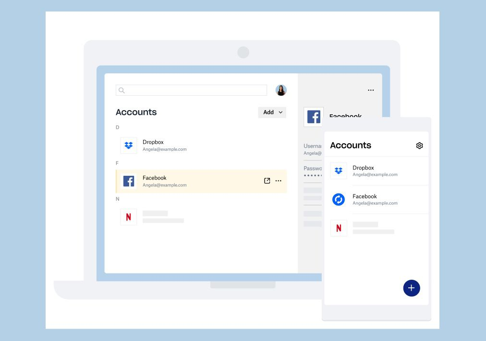
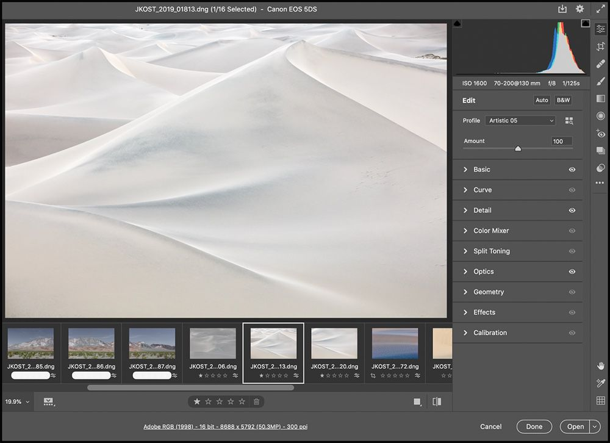
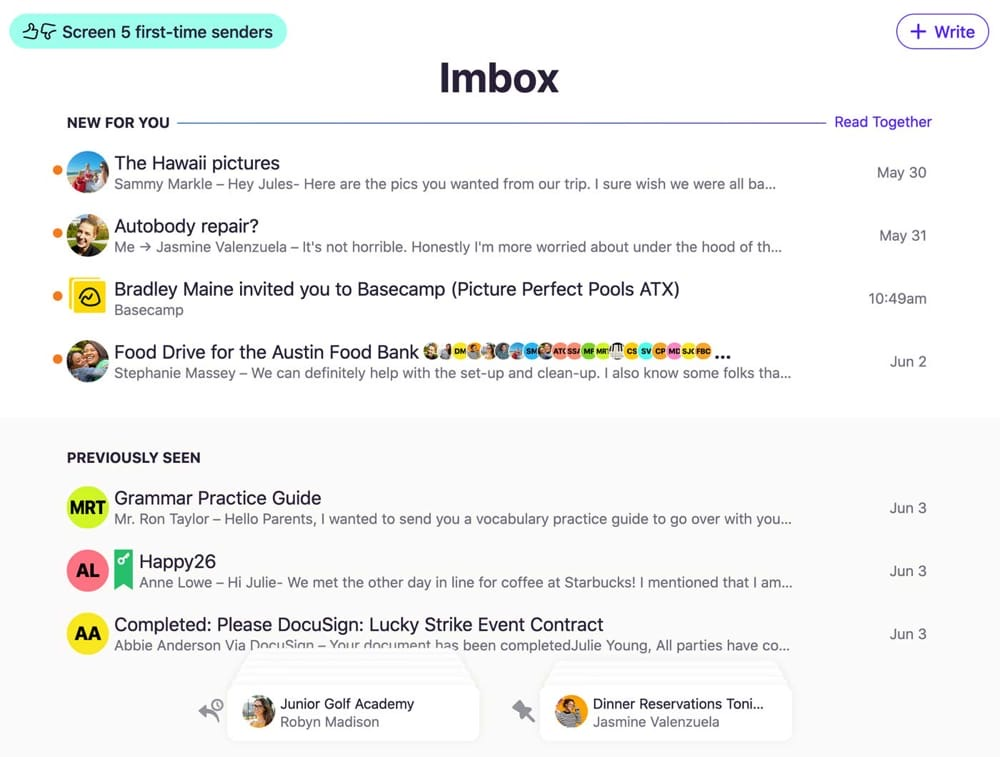
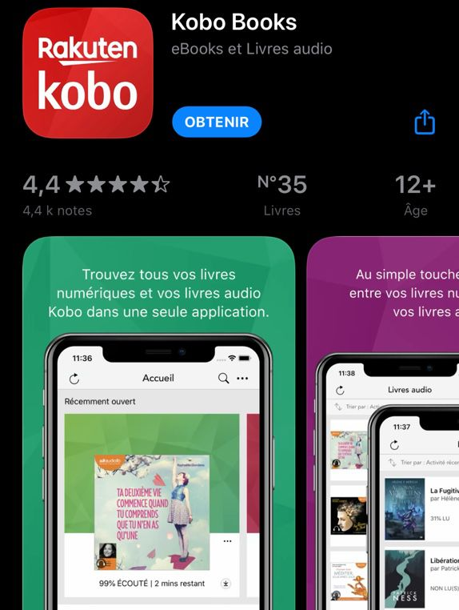

Dropbox lance une gestion de mots de passe et une fonction « Sauvegarder votre Mac »

C'est Noël en juin pour les utilisateurs de Dropbox, avec de nombreuses annonces pour la sauvegarde et la synchronisation de fichiers. La première nouveauté avait été aperçue il y a quelques jours, il s'agit de Dropbox Password, une app et un service
de gestion de mots de passe. À The Verge, le chef produit de Dropbox explique que l'un des usages les plus populaires du service est le stockage de mots de passe ou la synchronisation de ceux-ci via des utilitaires spécialisés.
Dropbox Password stocke ces sésames et les propose lorsqu'on veut s'identifier sur un site web, le tout depuis iOS, macOS, Windows ou Android. Si vous êtes abonné à la formule « Plus » de Dropbox, ce nouveau service ainsi que son
app iPhone sont accessibles en bêta-test sur smartphone, mais auprès d'un nombre limité d'utilisateurs pour le moment. Les autres abonnés « Plus » y auront droit dans les prochaines semaines.
La seconde nouveauté s'appelle Vault, un dossier de rangement sur son compte Dropbox, protégé par un code d'accès à 6 chiffres. C'est typiquement le genre d'endroit où l'on glissera des versions numériques de pièces d'identité et
d'autres documents de valeur. Ces fichiers pourront être néanmoins partagés avec des personnes triées sur le volet. Là encore, seule une poignée d'utilisateurs « Plus » ont accès à la bêta.
Ensuite, Dropbox lance sa solution de Sauvegarde sur ordinateur (pour Mac et PC), également en bêta mais les utilisateurs de la formule gratuite de Dropbox devraient la trouver dans les préférences "Sauvegardes" de leur application.
Les MacBook, premiers candidats logiques au passage à ARM
La grosse surprise de la WWDC 2020 — qui n'en sera pas vraiment une si vous lisez MacGeneration — devrait être le passage à l'architecture ARM pour les Mac. Tim Cook pourrait annoncer l'abandon des processeurs Intel au profit de processeurs maison, comme
en ont déjà tous les terminaux mobiles d'Apple.
En 2005, quand Steve Jobs a annoncé la transition du PowerPC aux puces d'Intel, c'est un Mac Pro qui a servi à faire la première démonstration. Dans quelques jours, quand Craig Federighi présentera — peut-être — le premier Mac tournant
avec un processeur Ax, il ne serait pas étonnant que cet ordinateur soit un MacBook.
« Le » MacBook ou « un » MacBook ? Certains espèrent la renaissance du MacBook 12", le poids plume sans ventilateur qui s'est envolé l'année dernière. Si ce n'est pas lui, ce sera sans doute un MacBook Air ou un MacBook Pro. Pourquoi
?
D'une part, parce que Mark Gurman, le journaliste le mieux renseigné sur cette transition, avance que c'est un ordinateur portable qui passera en premier sur un processeur maison. D'autre part, parce que c'est le plus logique. Les
portables sont les ordinateurs les plus proches techniquement des iPad.
La puce A12X de l'iPad Pro devance déjà le processeur du MacBook Air sur le test de performances Geekbench. On ne perdrait donc pas en puissance, on y gagnerait même sans doute, puisque ce n'est pas un A12X qu'Apple intégrerait dans
son premier portable ARM, mais une déclinaison à 12 cœurs de la future puce A14.
Creative Cloud : des mises à jour dans tous les sens, en particulier pour la photo

C'est aujourd'hui qu'aurait dû se tenir la première édition européenne d'Adobe Max, un grand rassemblement qui devait accueillir 5 000 « créatifs » du monde entier. Le coronavirus en aura décidé autrement, mais cela n'empêche pas Adobe de livrer de nombreuses
mises à jour pour ses applications du Creative Cloud. Voici les nouveautés les plus importantes à retenir.
Photo : Photoshop, Camera Raw et Lightroom progressent tous Sur bureau, Photoshop voit sa fonction de sélection automatique du sujet s'améliorer pour les portraits. Pour rappel, en un clic, l'application pouvait déjà sélectionner
l'intégralité d'un sujet à l'image. Désormais, Photoshop reconnait les portraits et applique un traitement spécial afin qu'ils soient sélectionnés plus précisément. Les cheveux, notamment, sont ainsi mieux détourés.
La gestion des polices est simplifiée : Adobe Fonts s'active automatiquement à l'ouverture de Photoshop si le fichier contient une ou plusieurs policesarticle_3 liées au service. De plus, la fonction de reconnaissance automatique
de la police sur un document devrait maintenant être plus fiable : elle prend en compte plus de polices ainsi que les textes verticaux.
Camera Raw, l'application individuelle servant à retoucher ses photos prises en RAW, est modernisée. Son interface est rafraîchie : elle est plus personnalisable (on peut plier les outils dont on ne se sert pas) et plus proche de
Lightroom. Plusieurs outils, comme ceux consacrés au recadrage ou aux courbes, ont été peaufinés.
HEY réinvente le mail en cassant les ponts avec le passé

HEY est un nouveau service de mail conçu par les créateurs de Basecamp, un outil d’organisation du travail destiné principalement aux entreprises. HEY n’est pas une interface pour accéder à vos mails, c’est un service complet qui comprend une boîte mail
en @HEY.com1, une interface web et des applications pour macOS, Windows, Linux, iOS et Android pour accéder aux données. C’est un point important à noter : ce nouveau-venu entend réinventer les mails et il coupe tous les ponts avec le
passé pour y parvenir.
La boîte mail associée à HEY n’est ainsi compatible avec aucun standard actuel, que ce soit POP3 ou l’IMAP. Vous ne pourrez pas accéder aux messages en utilisant votre client mail, tout devra être fait depuis l’interface créée pour
le service. Si c’est un point rédhibitoire, HEY n’est pas fait pour vous, mais ses créateurs revendiquent une série de choix très marqués. Leur objectif n’a pas été de remplacer Gmail ou iCloud, mais plutôt de repenser la gestion des mails
de manière assez fondamentale.
Ainsi, n’importe qui peut envoyer un mail à un utilisateur de HEY, mais ce dernier devra valider chaque correspondant manuellement. La première fois que vous recevez un mail d’une personne, il n’est pas affiché dans l’équivalent de
la boîte de réception, il est dans une liste distincte qui vous laisse l’opportunité d’accepter ou de bloquer cette personne. Si vous la bloquez, vous ne verrez plus jamais ses messages nulle part ; si vous l’acceptez, vous pouvez encore
choisir de filtrer les mails.
Concurrence : la Commission européenne ouvre aussi une enquête sur l'App Store

Le groupe japonais Rakuten, au travers de sa filiale Kobo spécialisée dans les liseuses électroniques, a demandé à Bruxelles d'enquêter sur les pratiques d'Apple et de son App Store, rapporte le Financial Times. Kobo estime qu'Apple use de pratiques anti-concurrentielles
lorsqu'elle promeut son activité de libraire sur l'App Store tout en réclamant 30 % sur les ventes de livres effectuées par les autres acteurs présents sur sa plateforme de distribution.
Chaque fois que Kobo vend un livre au travers de son app, Apple en récupère ce pourcentage (qui descend à 15 % lorsque l'utilisateur renouvelle son abonnement In-App au bout d'un an).
Kobo peut s'affranchir de cette ponction en conseillant à ses clients — ceux du moins qui lisent sur iPhone ou iPad plutôt sur ses liseuses électroniques — d'acheter leurs e-books depuis son site web. Spotify, Netflix mais aussi Amazon
(via son app Kindle) ont opté pour ce système lorsqu'on veut s'abonner à l'une de leurs formules ou pour acheter des livres — mais c'est une démarche plus compliquée et potentiellement dissuasive.
La filiale de Rakuten affirme que ses affaires pâtissent de ces contorsions : si elle vend au travers de l'app elle doit reverser une part à Apple, si elle vend en dehors de l'app elle perd potentiellement des clients sur le chemin.